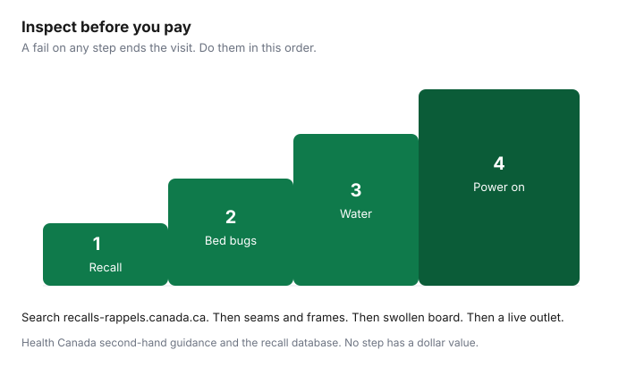

Household Items and Supplies · Canada
Buying Used Household Items in Canada: Facebook Marketplace, Kijiji, and What Never to Buy Secondhand
Used furniture and small appliances can beat new prices when you can see the item, lift it, and pay in a way that does not start with a link. The savings disappear if the dresser has bed bugs, the crib is illegal to sell, or the “payment” is a phishing page. The method is a short list: what is safe to buy used, how the scam shows up in Canada, how to pay, how to inspect, what the pickup costs, and how to make an offer.
Finding the listing in the first place overlaps the Kijiji and Marketplace housing guide. Whether the piece fits the room is the space guide. A van for a dining table is the movers guide. Photographing what you own, once it is home, is the home-inventory guide. This page is the purchase.
Key takeaways
- Solid wood you can inspect is the usual yes. Mattresses, cribs that fail today’s rules, car seats, and helmets are the usual no.
- CBC News, 16 July 2025: Montreal Marketplace sellers were sent fake e-Transfer links. The Anti-Fraud Centre describes fake payment emails, overpayments, and items that never ship.
- Interac Autodeposit deposits to your account without a security question. It does not make an unexpected email a real deposit. Check the bank app.
- Ontario’s Upholstered and Stuffed Articles regulation, O. Reg. 218/01, is marked revoked or spent as of 1 July 2019 on ontario.ca. Do not count on a second-hand tag as current Ontario law.
- There is no sourced “offer 30 percent less” rule in this guide. Offer from comparable listings you have saved, after you have seen the piece.
What to buy used vs new (solid wood yes; used mattresses no)
Health Canada’s page on buying second-hand products says a used consumer product has to meet the same safety law as a new one. Selling, distributing, or giving away a product that does not comply is against that law. The page tells you to avoid items that are recalled, banned, damaged, missing parts or labels, or no longer designed to a current rule, and single-impact products such as helmets and car seats that have been in a collision. Banned examples on that page include baby walkers, traditional drop-side cribs, and inclined infant sleep products. Electrical goods that plug in need a certification mark such as CSA, cUL, or cETL.
Cribs, cradles, and bassinets sold or given away in Canada have to meet the current regulations, including garage sales and online sales. Health Canada says cribs made before September 1986 should not be used. The industry guide adds that traditional drop-side cribs have been prohibited since 29 December 2016, and that cribs older than 10 years are more likely to have broken parts and missing instructions. You need the instructions, the model, and the date so you can search recalls. Do not repair a crib with hardware-store bolts. If the manufacturer cannot supply the part, the guide says to dispose of it so it is not used again. Car seats need a permanent label in English and French with the manufacturer, model, and date, and instructions at the time of sale. The industry guide says never to sell one that was in a vehicle during a collision, and not to sell one past the lifespan the manufacturer states.
For ordinary household goods, the split is practical. Solid-wood bookcases, desks, dining tables, and dressers are worth the trip when the joints are tight and the piece is dry. Hand tools with no missing guards are worth it when you can test the action. A small appliance is worth it when it powers on, the cord is intact, and the certification mark is there. A mattress is a no: you cannot see the inside, stains void the warranties on the new-mattress brands, and there is no trial. Upholstered sofas are a maybe only after the bed-bug inspection below, in daylight, with cushions off. Helmets and car seats are a no when you cannot prove they have never taken an impact and are inside the manufacturer’s date. The total-cost comparison with new flat-pack is the furniture guide.
| Item | Verdict | Rule |
|---|---|---|
| Solid wood tables, desks, bookcases, dressers | Often yes | Inspect for water damage, wobble, and repairs. Measure the stairs first. |
| Hand tools | Often yes | Guards on, action smooth, no cracked cords on anything powered. |
| Small plug-in appliances | Only after a power-on test | Certification mark present. Health Canada flags dropped handheld electronics as damaged. |
| Upholstered sofas and chairs | Only if you can inspect every seam | Bed bugs hide in piping and frames. If cushions do not come off, walk away. |
| Mattresses | No | You cannot inspect the interior, and a new mattress is the purchase with a trial. |
| Cribs, cradles, bassinets | No, unless it meets today’s rule and you can prove it | Pre-September 1986 cribs should not be used. Drop-side cribs are prohibited. Instructions and the date have to be available. |
| Car seats and booster seats | No for a collision history or a missing label | Label with manufacturer, model, and date. Not past the manufacturer’s lifespan. Never if it was in a crash. |
| Helmets | No if it has taken an impact | Health Canada groups helmets with car seats as single-impact products. |
| Baby walkers, drop-side cribs, inclined sleepers | No | Named on Health Canada’s banned or prohibited list for sale or giveaway. |
Marketplace and Kijiji scam red flags in Canada
CBC News reported on 16 July 2025 that Montreal Facebook Marketplace sellers were getting fake e-Transfer links. One seller described a buyer who wanted a deposit to hold an item. The link did not open her bank. She closed it. The Service de police de la Ville de Montréal told CBC that seven reverse-fraud cases were reported from January through 1 April 2025, and that none had been recorded in earlier years. CBC also reported that the RCMP had warned Newfoundland and Labrador residents in April 2025, including a warning about transfer emails from generic providers such as Gmail, which banks do not use to send Interac notices. A cybersecurity commentator in the piece said urgency is the tell, and that a short link can hide the real address. The advice in the story is to type the bank address yourself.
The Canadian Anti-Fraud Centre’s merchandise page says fraudsters send a fake e-Transfer email or text so you will enter banking credentials. Its October 2025 “check twice, pay once” note adds three marketplace patterns: an overpayment followed by a request to refund the difference, a fake payment confirmation when no money moved, and a seller who takes payment and never delivers. The Centre says to pick up in person when you can, to know the going price, and to report even an attempt. The phone number on that guidance is 1-888-495-8501, plus the online report and your local police if money moved. A profile created yesterday, a buyer who will not meet, a price far under every other listing, and a request to pay a “shipping company” before the item is released are stops. They are stops because those pages describe them, not because of a forum story.
Safe payment: Interac e-Transfer autodeposit and cash rules
Interac’s Autodeposit pages say that once the feature is on, money sent to your registered email or mobile number goes into the account you chose, without a security question, after routine fraud checks by the financial institution. The sender can see the recipient’s registered name, which is a check that the name matches the person in front of you. Interac also says that if you were not expecting a transfer, you should be careful, and that a security answer should never travel in the same email or text as the question. Autodeposit reduces the “someone guessed the answer and redirected the money” problem. It does not authenticate a message. A fake page that asks you to “deposit” by typing your password is not Autodeposit. Open the bank app from its icon. If the balance has not changed, you have not been paid.
For a local pickup, cash after inspection is the simple path: you have the item, they have the cash, and nobody clicks a link. Count it before the seller leaves. Do not refund an overpayment. The Anti-Fraud Centre’s overpayment note says the first payment can be reversed after you have sent the difference back. If you are the buyer and you send an e-Transfer, send it only after you have the item, to a name you have checked, for the exact amount. Do not pay a third party to “release” a couch. Card payments and PayPal-style buyer protection are outside this local-pickup pattern. Use them when the platform itself is the seller and the protection is in that platform’s terms, and read those terms. This is not a ranking of payment apps.
Inspection checklist: bed bugs, water damage, appliance tests
Do the checks in order, in daylight, before any payment. Recall first, so you do not spend twenty minutes on a model that is already off the market. Then bugs, then water, then power. The ladder is the same list.

Bed bugs: seams, piping, zipper teeth, staple lines under the fabric, and the screw holes in the frame. You are looking for live insects, eggs, cast skins, and dark spots. A musty sweet smell is a reason to stop, not a reason to “air it out.” Do not put a suspect piece in your car “to decide at home.” Toronto’s garbage page is about wrapping an infested mattress for collection, which is what you do with your own infested mattress, not a cleaning tip for a stranger’s sofa.
Water: white bloom on veneer, swollen particle board, a soft bottom panel, and rust on hinges. Those are the repairs you would be buying. Appliance test: plug it in at the seller’s home, run one cycle of the function you care about, and check the cord and the certification mark. If there is no outlet, you do not have a test. Recalls: search recalls-rappels.canada.ca with the brand and model from the label, not from the seller’s memory.
Transport and pickup costs
The purchase price is incomplete without the trip. A dining table that is $80 and an hour away may need a second person, blankets, and a vehicle that is not a compact car. Price that trip the way the movers guide prices a van, with fuel and a realistic loading time. If the seller’s building needs an elevator, ask who books it. A piece that cannot leave the apartment is not for sale yet. Compare the all-in used price with the delivered new price from the furniture guide. Used wins when it is still cheaper after the trip and it passed the inspection. It loses when you rent a truck for a particle-board shelf you could have parcel-shipped.
Bring a tape, a flashlight, and a friend. Measure the piece and the doorway you are taking it through at home. Leon’s new-furniture policy charges restocking when a piece does not fit. A private seller will not refund you for the same mistake. If you are keeping the item, add a photo to the home inventory the day it arrives, so an insurance claim later has a record. That guide is about claims, not about bargaining.
Negotiation scripts and pricing guide
No percentage-off rule is used here, because this build did not find a sourced Canadian standard such as “always offer 20 percent less.” The method is comparables. Save two or three listings of the same kind of piece, in similar condition, from the same city, in the same week. Your offer sits next to those prices after you have subtracted anything the other listings include, such as delivery. Make the offer in person, after the inspection, and name the flaw you found: a scratch, a missing shelf, a long drive. “Would you take $X given the scratch and that I am here with a vehicle today?” is a script. “My budget is $X” is a script. Both are fine. A seller who will not let you inspect does not get an offer.
Walk when the price only makes sense if you skip a step on the ladder. Walk when payment has to happen before the meetup. If you agree, pay the amount you said, take the item, and leave. Do not add a tip to a stranger to “hold it until tonight” through a link. Ontario’s old rule requiring a second-hand label on upholstered articles, O. Reg. 218/01, is shown on ontario.ca as revoked or spent on 1 July 2019. A yellow tag from that era is history. It is not a certificate that the sofa is free of bed bugs today.
| Step | What you do |
|---|---|
| 1. Comparables | Three similar listings. Drop the ones that are delivery-included or “must go today” without photos of the joints. |
| 2. Inspect | Recall, bugs, water, power. A fail ends the visit before the price talk. |
| 3. Offer | Name the comparable and the flaw. Ask for a number. Silence is allowed. |
| 4. Pay | Cash, or an e-Transfer you confirm inside the bank app for the exact amount, after the item is yours to load. |
Sources & date stamps
- CBC News, 16 July 2025, “Scam targeting sellers on Facebook Marketplace in circulation in Montreal.” SPVM figure: seven reports from January to 1 April 2025. RCMP warning to Newfoundland and Labrador referenced in that report.
- Canadian Anti-Fraud Centre, merchandise fraud page, and the October 2025 “Check twice, pay once” note. Report line 1-888-495-8501.
- Interac, Autodeposit explainers and e-Transfer help, checked 26 Sep 2026. Direct deposit without a security question. Unexpected transfers still need caution. Security answers do not go in email or text.
- Health Canada, “Buying second-hand products,” crib and bassinet page, and the industry guide to second-hand products, including the September 1986 crib date, the 29 December 2016 drop-side prohibition, and car-seat label rules.
- Recalls and Safety Alerts: recalls-rappels.canada.ca.
- Ontario.ca, O. Reg. 218/01, Upholstered and Stuffed Articles: revoked or spent 1 July 2019.
- City of Toronto oversized-items page: wrap a bed-bug infested mattress for garbage collection.
Frequently asked questions
How do I avoid scams on Facebook Marketplace in Canada?
Meet locally, pay after you inspect the item, and ignore links in messages. CBC News reported on 16 July 2025 that Montreal sellers received fake e-Transfer links, and the Canadian Anti-Fraud Centre describes fake payment emails, requests for money dressed up as payments, and overpayment refunds. Log into the bank the way you usually do, and treat a brand-new profile, a rush, or a courier story as a stop.
Is Interac e-Transfer safe for Marketplace purchases?
It can be, once the money is in your account and you know the person in front of you. Interac says Autodeposit deposits to the linked account without a security question, after the bank’s checks, and that does not make an unexpected email a real deposit. The Anti-Fraud Centre says lookalike transfer messages are often phishing or a request for funds. Open the bank app from its icon and confirm the balance before you hand the item over.
How do I check used furniture for bed bugs?
Inspect in daylight, with cushions off, at seams, zippers, the underside, and frame joints, for insects, eggs, shed skins, dark spots, or a sweet musty smell. If the cushions do not come off, do not buy the upholstered piece. Toronto’s oversized-item page says to wrap an infested mattress in plastic for garbage, which is disposal advice for your own mattress, not a way to clean a stranger’s sofa.
What should I never buy secondhand?
Health Canada applies the same safety rules to used goods and flags recalled, banned, or damaged products, plus helmets and car seats that have been in a collision. Cribs made before September 1986 should not be used, drop-side cribs are prohibited, and baby walkers are banned. A used mattress is a poor buy because you cannot see inside it or trial it. If the label or the instructions are missing, leave the item.
How do I check if a used item has been recalled?
Search recalls-rappels.canada.ca with the brand and model on the label, and keep the manufacture date when the label has one. Health Canada says a car seat label has to show the manufacturer, model, and date, and a crib’s instructions should include the model and date so that search is possible. No label means you cannot run it. Do not accept a seller’s assurance that it was already checked.